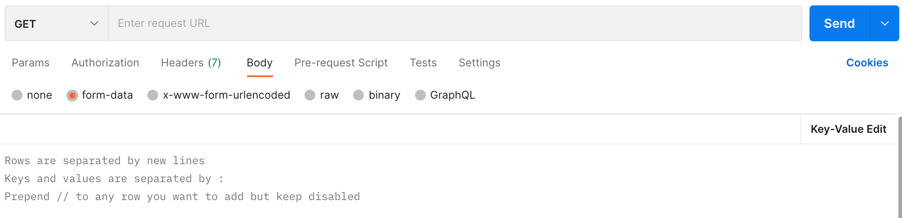

功能
1. 数据转换
在常用数据格式之间相互转换数据内容。
数据含 3 个属性：格式、类型和内容，通常数据即指代数据内容。
1.1. 数据格式
常用数据格式包括：
XML、JSON、YAML 是标准数据格式； properties 是一种文件类型而非数据格式， 因为没有对应的标准，此处直接使用其文件类型表示。
Postman 格式 表示 Postman 中使用到的 Bulk Key-Value 格式：

行与行之间使用 \n 分割； 键值之间使用 : 分割。
1.2. 数据类型
数据类型 主要是对象，不处理集合和原始类型。
1.3. 示例
示例可作为实现的参考，但不是约束。
有如下用户：
对应不同格式的内容如下：
json
{
"name" : "张三",
"age" : 18,
"roles" : [ {
"name" : "admin",
"remark" : "管理员"
}, {
"name" : "employee",
"remark" : "员工"
} ],
"tags" : [ "goodness", "tall" ]
}xml
<?xml version='1.0' encoding='UTF-8'?>
<User>
<name>张三</name>
<age>18</age>
<roles>
<roles>
<name>admin</name>
<remark>管理员</remark>
</roles>
<roles>
<name>employee</name>
<remark>员工</remark>
</roles>
</roles>
<tags>
<tags>goodness</tags>
<tags>tall</tags>
</tags>
</User>properties
name=张三
age=18
roles[0].name=admin
roles[0].remark=管理员
roles[1].name=employee
roles[1].remark=员工
tags[0]=goodness
tags[1]=tallyaml
name: "张三"
age: 18
roles:
- name: "admin"
remark: "管理员"
- name: "employee"
remark: "员工"
tags:
- "goodness"
- "tall"